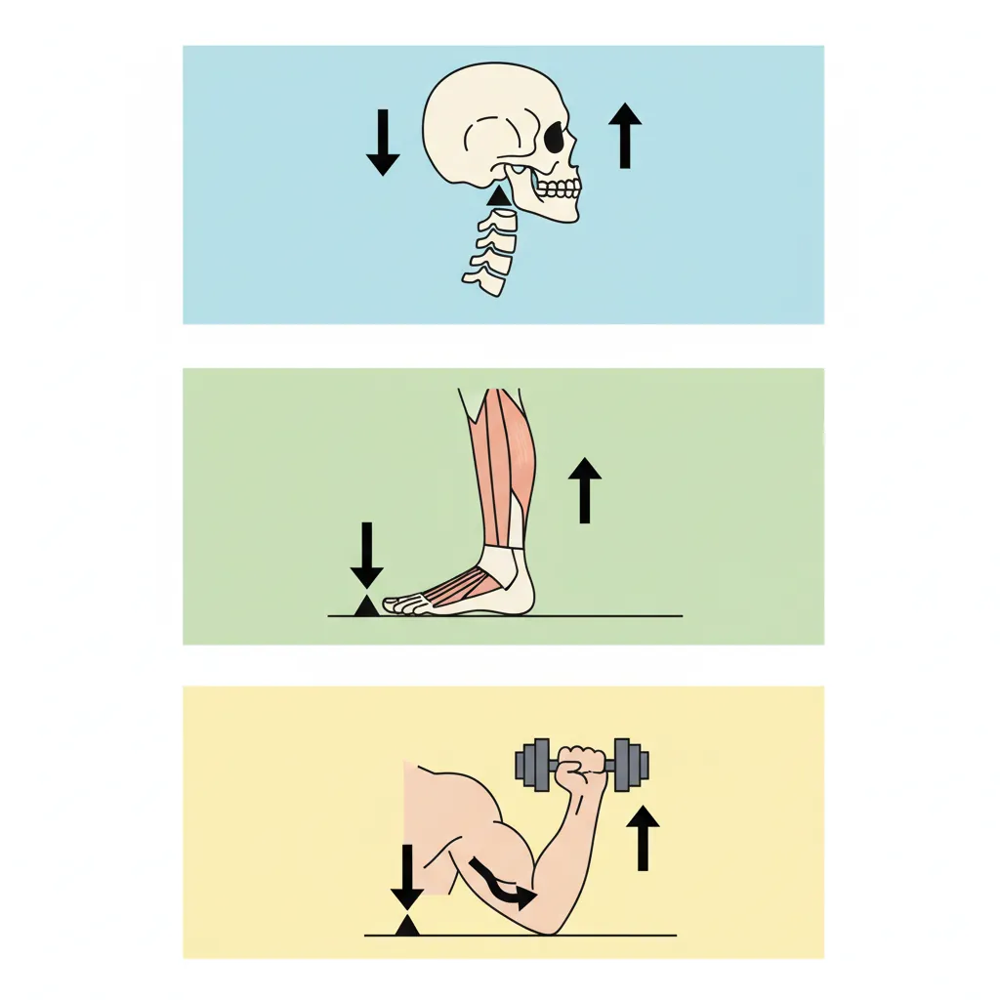
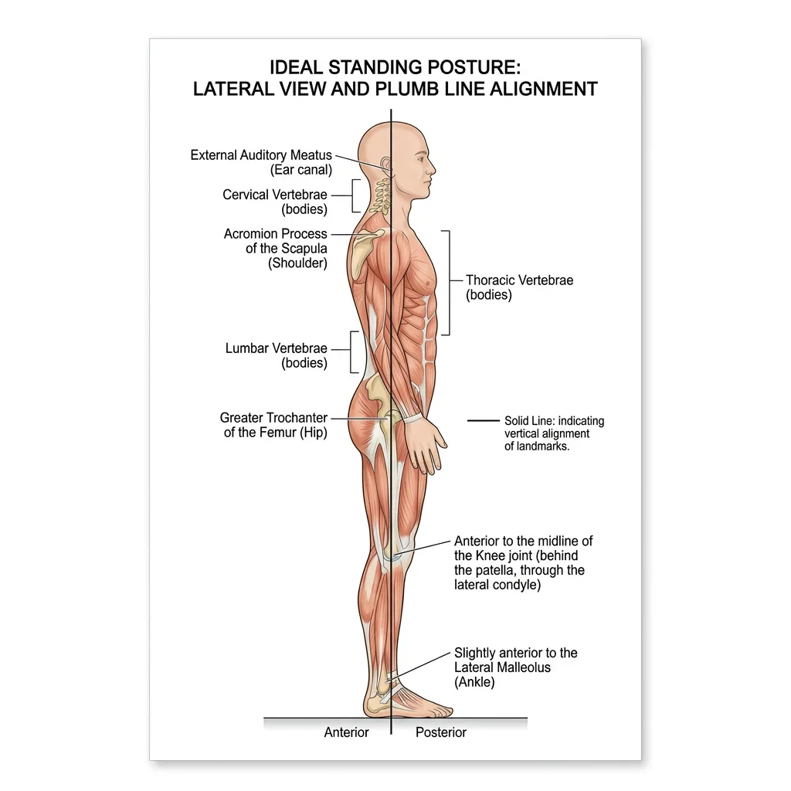
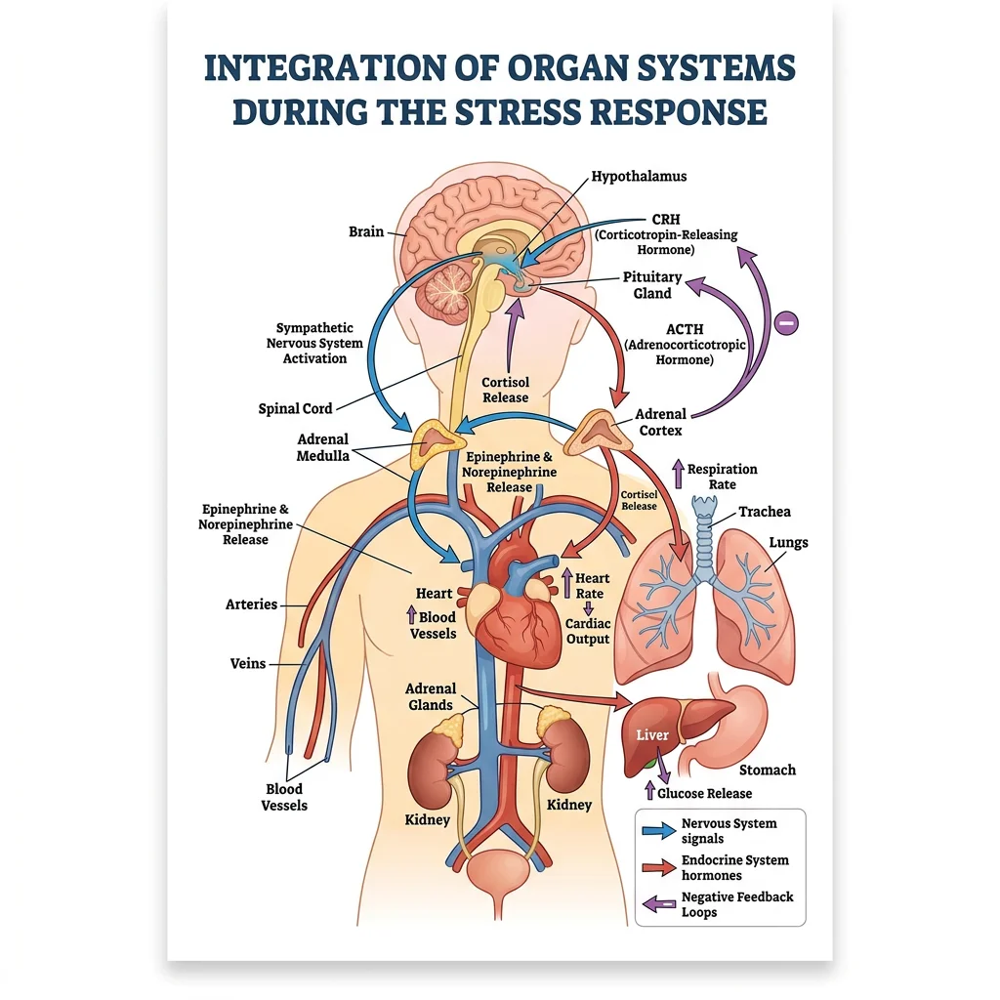
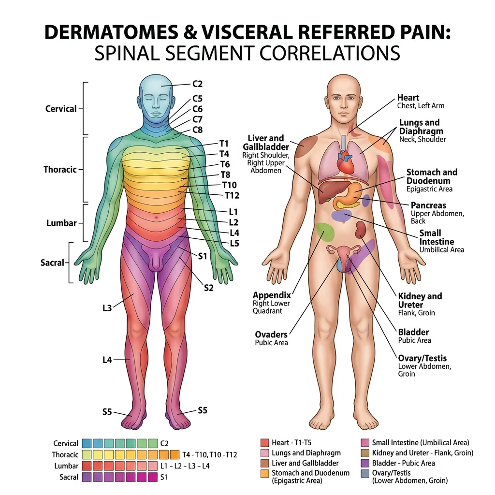
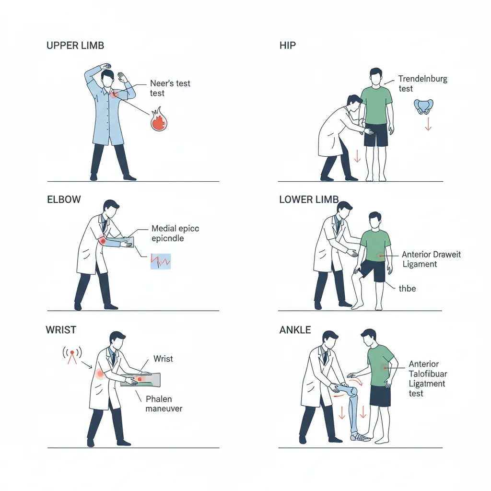

Human Anatomy Mastery
Anatomical Terminology & Body Planes
Directional terms, planes, cavities, tissuesSkeletal System & Joints
Osteology, axial & appendicular, arthrologyMuscular System & Movement
Muscle types, functional groups, biomechanicsCardiovascular & Lymphatic Anatomy
Heart, vessels, lymphatics, clinical linksNervous System & Neuroanatomy
CNS, PNS, autonomic, functional pathwaysVisceral Anatomy — Thorax & Abdomen
Thoracic & abdominal organs, peritoneumHead, Neck & Special Senses
Skull foramina, eye, ear, oral anatomySurface Anatomy & Clinical Imaging
Landmarks, X-ray, CT, MRI, proceduresHistology & Microscopic Anatomy
Cell ultrastructure, tissue & organ histologyEmbryology & Developmental Anatomy
Germ layers, organogenesis, malformationsFunctional & Applied Anatomy
Biomechanics, posture, gait, integrationRegional Dissection Mastery
Upper/lower limb, thorax, abdomen, pelvisBiomechanics of Movement
Biomechanics is where physics meets anatomy — the study of forces acting on and generated by the living body. Every time you lift a coffee cup, climb stairs, or turn your head, your musculoskeletal system is solving a complex engineering problem: how to move bones efficiently through space using muscles anchored at precise points. Understanding biomechanics transforms anatomy from a static catalogue of structures into a dynamic science of movement.

Lever Systems & Mechanical Advantage
Archimedes famously declared, "Give me a lever long enough and I shall move the world." The human body contains all three classes of levers, each optimized for a different functional purpose — some for power, others for speed and range of motion.
The Three Classes of Levers
A lever requires three components: a fulcrum (pivot point — the joint), an effort (force — the muscle contraction), and a load (resistance — the weight being moved). The arrangement of these three elements determines the lever class and its mechanical properties.
| Lever Class | Arrangement (F-E-L) | Anatomical Example | Advantage | Everyday Analogy |
|---|---|---|---|---|
| First Class | Effort — Fulcrum — Load | Atlanto-occipital joint: posterior neck muscles (effort) pull on occiput across the atlas (fulcrum) to lift the face (load) | Balance & equilibrium; can favor either speed or power depending on arm lengths | A see-saw or scissors |
| Second Class | Effort — Load — Fulcrum | Ankle plantarflexion: gastrocnemius (effort) lifts body weight (load) around the metatarsophalangeal fulcrum | Power — always has mechanical advantage >1 because effort arm is longer than load arm | A wheelbarrow |
| Third Class | Load — Effort — Fulcrum | Elbow flexion: biceps brachii (effort) inserts on radial tuberosity between the elbow (fulcrum) and the hand (load) | Speed & range — trades force for velocity and excursion; most common class in the body | A fishing rod or tweezers |
Mechanical Advantage & Moment Arms
Mechanical advantage (MA) is the ratio of the effort arm to the load arm. When MA > 1, less force is needed (power advantage); when MA < 1, greater force is required but movement speed and range increase (speed advantage). The moment arm — the perpendicular distance from the muscle's line of pull to the joint center — changes throughout the range of motion. The biceps has its greatest moment arm at ~90° elbow flexion, which is why curls feel strongest in the mid-range.
Torque (τ) equals force (F) multiplied by the moment arm (d): τ = F × d. This equation explains why moving a muscle's insertion even 1 cm further from the joint dramatically increases its torque-generating capacity. Surgical tendon transfer procedures exploit this principle by repositioning muscle attachments to optimize leverage.
Giovanni Alfonso Borelli — Father of Biomechanics (1680)
Borelli, a student of Galileo, was the first to apply mathematical analysis to animal movement in his posthumous masterwork De Motu Animalium. He calculated the forces in muscles and bones during tasks like standing, walking, and lifting. His analysis of the elbow showed that biceps needs to produce forces many times the external load — a finding that shocked the scientific community but perfectly predicted by lever mechanics. Borelli essentially founded biomechanics 340 years before modern kinesiology textbooks formalized the field.
Joint Stability Mechanisms
Joint stability is the ability of a joint to maintain its functional position under load. It depends on three interacting systems: passive (bony congruence, ligaments, capsule, labra), active (muscles and tendons crossing the joint), and neural (proprioceptive feedback and reflexive muscle activation). The relative contribution of each system varies by joint.
| Stability Factor | Components | Hip Joint Example | Shoulder Joint Example |
|---|---|---|---|
| Bony Congruence | Shape of articular surfaces; depth of socket | Deep acetabulum covers ~170° of femoral head — inherently very stable | Shallow glenoid covers only ~25% of humeral head — inherently unstable |
| Ligamentous | Capsular ligaments, accessory ligaments | Iliofemoral (strongest in body), pubofemoral, ischiofemoral ligaments resist hyperextension | Glenohumeral ligaments (superior, middle, inferior) — primarily resist translation in specific positions |
| Labral/Meniscal | Fibrocartilaginous rim deepening the socket | Acetabular labrum increases depth by ~20% and creates suction seal | Glenoid labrum increases depth by ~50% — critical for stability; Bankart lesion → recurrent dislocation |
| Muscular (Active) | Dynamic stabilizers providing compressive force | Deep external rotators, gluteus medius/minimus compress head into acetabulum | Rotator cuff (SITS muscles) compress humeral head into glenoid — primary stabilizers |
| Neural | Proprioceptors, reflexive co-contraction | Capsular mechanoreceptors trigger protective muscle guarding | Shoulder proprioception critical for overhead athletes; deficit after dislocation |
Anterior Shoulder Dislocation — The TUBS Profile
A 22-year-old rugby player tackles an opponent with his arm abducted and externally rotated. He feels a "pop" and immediate inability to move the shoulder. Examination shows a squared-off shoulder contour (loss of deltoid roundness), the arm held in slight abduction and external rotation, and the humeral head palpable anteriorly. This is the classic TUBS pattern: Traumatic, Unidirectional (anterior), with a Bankart lesion (labral tear off the anterior-inferior glenoid), requiring Surgery if recurrent. The anterior band of the inferior glenohumeral ligament — the primary restraint against anterior translation in abduction — is also typically torn. Contrast this with AMBRII (Atraumatic, Multidirectional, Bilateral, Rehabilitation, Inferior capsular shift, Interval closure) in patients with generalized laxity.
Muscle Force Vectors
When a muscle contracts, it generates a force along its line of pull — the direction from origin to insertion. This force can be resolved into two vector components relative to the bone:
- Rotary component (perpendicular): The portion of the force that acts at right angles to the long axis of the bone, creating torque and producing joint rotation. This is the "useful" component for movement.
- Stabilizing/dislocating component (parallel): The portion acting along the bone's long axis. When directed toward the joint, it compresses the joint surfaces together (stabilizing). When directed away, it tends to distract or dislocate the joint.
The ratio of rotary to stabilizing/dislocating force changes throughout the range of motion. At early elbow flexion (0–45°), the biceps pulls mostly along the forearm axis → predominantly stabilizing. At 90°, the line of pull is nearly perpendicular → maximum rotary efficiency. Beyond 90°, the parallel component reverses direction, becoming a dislocating force pulling the radius away from the humerus.
Force Couples
A force couple occurs when two or more muscles pull in different directions to produce a pure rotation without translation. The most important clinical force couple is the rotator cuff–deltoid couple: the deltoid pulls the humerus superiorly during abduction, while the infraspinatus and subscapularis pull inferiorly, creating a net spinning motion of the humeral head in the glenoid. If the rotator cuff is torn (massive tear), the deltoid's unopposed superior pull causes the humeral head to ride upward — cuff tear arthropathy.
Another critical force couple is the scapular couple: the upper trapezius and lower serratus anterior work as a force couple to rotate the scapula upward during overhead reach. Serratus anterior paralysis (long thoracic nerve injury) eliminates this couple, producing "winging" of the scapula and inability to elevate the arm above 90°.
Posture & Gait
Posture is the relative arrangement of body segments at any given moment, while gait is the pattern of postures cycled during locomotion. Both are governed by the same biomechanical principles — gravity, ground reaction forces, and muscle activation — but posture is a static equilibrium problem and gait is a dynamic one. Understanding both is essential for clinical assessment of musculoskeletal and neurological conditions.

Postural Analysis & Alignment
Ideal standing posture aligns the body's center of gravity over its base of support with minimal muscular effort. The plumb line — a vertical reference passing through the body — should fall through specific anatomical landmarks when viewed from the side.
The Ideal Plumb Line (Lateral View)
| Level | Landmark | Significance |
|---|---|---|
| Head | Slightly posterior to the apex of the coronal suture | Head balanced with minimal neck muscle effort |
| Cervical Spine | Through the odontoid process (C2) and bodies of cervical vertebrae | Normal cervical lordosis maintained |
| Shoulder | Through the acromion process | Shoulder joint centered — not protracted or retracted |
| Thorax | Through the bodies of the thoracic vertebrae | Normal thoracic kyphosis (20–45°) |
| Lumbar Spine | Through the bodies of lumbar vertebrae | Normal lumbar lordosis (40–60°) |
| Hip | Slightly posterior to the center of the hip joint | Gravity line creates extension moment — locked by iliofemoral ligament |
| Knee | Slightly anterior to the center of the knee joint | Creates extension moment — maintained by passive tension, not quadriceps |
| Ankle | Slightly anterior to the lateral malleolus | Creates dorsiflexion moment — balanced by continuous soleus activity |
Common Postural Deviations
| Deviation | Description | Tight Muscles | Weak/Lengthened Muscles | Associated Symptoms |
|---|---|---|---|---|
| Upper Crossed Syndrome | Forward head, protracted shoulders, increased thoracic kyphosis | Upper trapezius, levator scapulae, pectoralis major/minor, suboccipitals | Deep neck flexors, lower trapezius, serratus anterior, rhomboids | Neck pain, tension headaches, rotator cuff impingement |
| Lower Crossed Syndrome | Anterior pelvic tilt, increased lumbar lordosis, protruding abdomen | Iliopsoas, rectus femoris, erector spinae (lumbar) | Abdominals (rectus, obliques), gluteus maximus, hamstrings | Low back pain, hip flexor tendinopathy, disc herniation risk |
| Sway-Back Posture | Posterior shift of thorax over pelvis, flattened lumbar lordosis, hyperextended knees | Hamstrings, upper abdominals, upper back extensors | Iliopsoas, external obliques, lower back extensors | Mid-thoracic pain, anterior hip pain |
| Flat-Back Posture | Loss of lumbar lordosis, posterior pelvic tilt, forward head | Hamstrings, rectus abdominis | Iliopsoas, lumbar extensors | Difficulty standing upright for prolonged periods, lumbar disc strain |
Vladimir Janda's Crossed Syndromes (1979)
Czech neurologist Vladimir Janda revolutionized postural assessment by recognizing that muscle imbalances follow predictable patterns. He observed that tight muscles form an "X" across the body: in upper crossed syndrome, the tight suboccipitals and upper trapezius "cross" with the tight pectorals, while weak deep neck flexors cross with weak lower trapezius/serratus anterior. This cross pattern creates predictable joint dysfunction at the cervicothoracic junction and glenohumeral joint. Janda's insight was that you cannot simply stretch tight muscles or strengthen weak ones in isolation — the entire pattern must be addressed because the neural control system maintains the imbalance. His work shifted rehabilitation from a muscle-by-muscle approach to a pattern-based systems approach that remains the foundation of modern postural correction.
Gait Cycle Phases
The gait cycle describes one complete stride — from initial contact of one foot to the next initial contact of the same foot. It is divided into stance phase (~60% of the cycle) when the foot is on the ground, and swing phase (~40%) when the foot is in the air. Think of walking as controlled falling: with each step, the body vaults over the stance limb like an inverted pendulum, converting potential energy to kinetic energy and back again with remarkable efficiency (~65% energy recovery).
| Phase | Sub-Phase | % of Cycle | Key Events | Primary Muscles Active |
|---|---|---|---|---|
| Stance (60%) | Initial Contact (Heel Strike) | 0–2% | Heel contacts ground; ankle dorsiflexed, knee extended, hip flexed ~30° | Tibialis anterior (eccentric), hamstrings (decelerate limb), gluteus maximus |
| Loading Response | 2–12% | Foot flat; body weight transfers to stance limb; shock absorption via knee flexion (~15°) | Quadriceps (eccentric knee control), tibialis anterior (eccentric foot lowering) | |
| Midstance | 12–31% | Body passes over foot; opposite foot lifts off (single-limb support begins); tibia advances over foot | Gluteus medius (pelvis stabilization), soleus (eccentric tibial control), hip abductors | |
| Terminal Stance | 31–50% | Heel lifts; body falls forward past stance foot; knee extends; hip extends past neutral | Gastrocnemius–soleus (concentric push-off), intrinsic foot muscles (arch support) | |
| Pre-Swing | 50–60% | Toe-off; double support as opposite foot contacts ground; rapid knee flexion, ankle plantarflexion | Rectus femoris (hip flexion initiation), adductors, iliopsoas | |
| Swing (40%) | Initial Swing | 60–73% | Foot clears ground; knee flexes to ~60°; hip flexes; ankle dorsiflexes | Iliopsoas (hip flexion), short head of biceps femoris (knee flexion), tibialis anterior (foot clearance) |
| Mid-Swing | 73–87% | Limb advances past stance limb; knee begins extending; ankle at neutral | Tibialis anterior (maintains dorsiflexion), momentum carries limb forward | |
| Terminal Swing | 87–100% | Knee fully extends; limb decelerates in preparation for heel strike | Hamstrings (eccentric — decelerate knee extension), tibialis anterior (positions ankle), quadriceps |
Common Gait Abnormalities
Gait deviations have specific anatomical and neurological causes. Recognizing the pattern immediately narrows the differential diagnosis — gait analysis is essentially "neuromuscular anatomy in motion."
| Gait Pattern | Description | Anatomical Cause | Associated Conditions |
|---|---|---|---|
| Trendelenburg Gait | Pelvis drops on the unsupported side during stance; trunk may lean toward stance side | Gluteus medius weakness (superior gluteal nerve L4-S1) | Post-hip arthroplasty, L5 radiculopathy, muscular dystrophy, hip OA |
| Steppage (Foot Drop) Gait | Exaggerated hip and knee flexion to clear a drooping foot; foot slaps ground at initial contact | Tibialis anterior paralysis (common fibular/peroneal nerve, L4-L5) | Fibular neck fracture, leg crossing neuropathy, L4-L5 disc herniation, Charcot-Marie-Tooth |
| Antalgic Gait | Shortened stance phase on the painful side; hurried step to offload | Pain in lower extremity joint or soft tissue — patient minimizes weight-bearing time | Arthritis, fracture, plantar fasciitis, metatarsalgia |
| Waddling Gait | Bilateral Trendelenburg with exaggerated trunk sway side to side | Bilateral hip abductor weakness or proximal myopathy | Muscular dystrophy (Duchenne), bilateral hip dysplasia, pregnancy (relaxin-mediated laxity) |
| Circumduction Gait | Affected leg swings outward in a semicircle during swing phase | Inability to flex hip/knee or dorsiflex ankle adequately; stiff, extended limb | Upper motor neuron lesion (stroke/hemiplegia), knee or hip fusion |
| Parkinsonian (Festinating) Gait | Short shuffling steps, reduced arm swing, flexed posture, difficulty initiating movement | Basal ganglia dysfunction — loss of dopaminergic input → rigidity and bradykinesia | Parkinson's disease, drug-induced parkinsonism |
| Ataxic (Cerebellar) Gait | Wide-based, unsteady, lurching; irregular step length and timing | Cerebellar dysfunction — loss of coordination and balance calibration | Cerebellar stroke, alcoholic cerebellar degeneration, multiple sclerosis |
Organ System Integration
The human body is not a collection of independent organ systems — it is an integrated whole where cardiovascular, respiratory, nervous, endocrine, and musculoskeletal systems communicate continuously. Functional anatomy asks: how do these systems coordinate moment-to-moment to maintain homeostasis and enable complex behaviors like exercise, digestion, or the fight-or-flight response?

Cardiovascular-Respiratory Coupling
The cardiovascular and respiratory systems are so tightly coupled that they are often called the cardiorespiratory system. Their intimate anatomical and functional relationship begins in the thorax, where the heart sits within the mediastinum, sandwiched between the lungs, and is influenced by every breath.
Ventilation-Perfusion Matching
For efficient gas exchange, blood flow (perfusion, Q) must be matched to airflow (ventilation, V) in each lung region. In the upright lung, gravity creates a gradient: bases receive more blood flow (greater hydrostatic pressure) and more ventilation (diaphragm moves more at bases). The overall V/Q ratio is ~0.8 in the normal lung. V/Q mismatch — when ventilation and perfusion are unevenly distributed — is the most common cause of hypoxemia in clinical medicine (pulmonary embolism = dead space; pneumonia = shunt).
Respiratory Pump & Venous Return
The act of breathing creates pressure changes in the thorax that actively assist venous return. During inspiration, the diaphragm descends, intrapleural pressure becomes more negative (~−8 cmH₂O), and the right atrium expands, creating a "suction" that draws blood from the IVC. Simultaneously, abdominal pressure rises, squeezing blood from abdominal veins upward. This respiratory pump accounts for 30–50% of venous return at rest and becomes even more important during exercise with deeper breathing. The anatomical arrangement — diaphragm between low-pressure thorax and higher-pressure abdomen — is functionally elegant.
Neuroendocrine Coordination
The hypothalamic-pituitary axis represents the ultimate integration of nervous and endocrine systems. The hypothalamus — a tiny region at the base of the diencephalon, weighing only ~4 grams — receives neural input from the limbic system, cerebral cortex, retina, and visceral afferents, then converts this information into hormonal signals that control growth, reproduction, stress response, metabolism, and fluid balance.
The Stress Response as Integration Example
When you encounter a threat, the integration of systems is rapid and comprehensive:
- Amygdala (limbic system) detects danger → signals hypothalamus
- Sympathetic nervous system activates within seconds: adrenal medulla releases epinephrine and norepinephrine → heart rate ↑, bronchodilation, pupil dilation, blood diverted from gut to skeletal muscle
- HPA axis activates within minutes: hypothalamus → CRH → anterior pituitary → ACTH → adrenal cortex → cortisol → sustained metabolic support (gluconeogenesis, anti-inflammatory, immune modulation)
- Musculoskeletal system responds: increased muscle tone, enhanced reflexes, postural readiness for fight or flight
- Other systems adjust: GI motility ↓ (vagal withdrawal), bladder sphincter contracts, coagulation cascade primes (evolutionary advantage for wound survival)
Musculoskeletal-Neural Feedback Loops
Movement is not simply muscles pulling on bones under conscious command. It requires continuous proprioceptive feedback — the unconscious sense of body position and movement. Several specialized receptors embedded in muscles, tendons, and joints feed information to the CNS, creating closed-loop control systems.
| Receptor | Location | Stimulus Detected | Reflex Pathway | Function |
|---|---|---|---|---|
| Muscle Spindle | Within skeletal muscle belly (intrafusal fibers) | Muscle stretch (length change) and rate of stretch | Ia afferents → spinal cord → alpha motor neurons (monosynaptic stretch reflex) | Detects unexpected stretch → reflexive contraction to resist (e.g., knee-jerk reflex); sets muscle tone |
| Golgi Tendon Organ (GTO) | Musculotendinous junction (within tendon collagen) | Muscle tension (force of contraction) | Ib afferents → spinal cord → inhibitory interneuron → alpha motor neuron inhibited | Protects muscle/tendon from excessive force → autogenic inhibition (clasp-knife reflex) |
| Joint Receptors | Joint capsule and ligaments (Ruffini, Pacinian types) | Joint position, pressure, speed of movement | Various afferents → cerebellum, somatosensory cortex | Contribute to joint position sense; most active at extremes of range |
| Free Nerve Endings | Throughout musculoskeletal tissues | Pain (nociception), temperature, chemical irritation | Small-diameter afferents (Aδ, C fibers) → spinal cord → flexor withdrawal reflex | Protective withdrawal from harmful stimuli; crossed extensor reflex maintains balance |
Sir Charles Sherrington — Reflexes and the Integrative Action of the Nervous System (1906)
Nobel laureate Sherrington's masterwork described how the spinal cord integrates sensory input to produce coordinated motor output. He defined key principles still used today: reciprocal inhibition (when a flexor contracts, its antagonist extensor is reflexively inhibited), final common pathway (the alpha motor neuron as the convergence point for all motor commands), and successive induction (facilitating alternating movements). His work on the stretch reflex arc — from muscle spindle to alpha motor neuron — established the conceptual framework for understanding how proprioceptive loops maintain posture and coordinate movement. Sherrington's integration concept anticipated systems neuroscience by 80 years.
Pain & Referral Patterns
Pain is rarely straightforward in clinical practice. A patient with a heart attack may feel pain in the left arm. A kidney stone may present as testicular pain. Gallbladder disease may cause shoulder tip pain. These referred pain patterns — where pain is perceived at a location distant from its source — reflect the segmental organization of the nervous system established during embryonic development. Understanding these patterns is fundamental to clinical diagnosis.

Dermatomes & Myotomes
A dermatome is the area of skin supplied by a single spinal nerve root. A myotome is the group of muscles innervated by a single spinal nerve root. Both reflect the original segmental body plan from embryonic somites and are essential for localizing spinal cord or nerve root pathology.
Key Dermatome Landmarks
| Nerve Root | Dermatome Landmark | Myotome (Key Movement) | Reflex |
|---|---|---|---|
| C5 | Lateral arm (regimental badge area) | Shoulder abduction (deltoid), elbow flexion (biceps) | Biceps reflex |
| C6 | Lateral forearm, thumb, index finger | Wrist extension (ECRL, ECRB) | Brachioradialis reflex |
| C7 | Middle finger | Elbow extension (triceps), wrist flexion | Triceps reflex |
| C8 | Medial forearm, ring and little fingers | Finger flexion (FDP), hand grip | — |
| T1 | Medial arm (axillary area) | Finger abduction (interossei) | — |
| T4 | Nipple line | — | — |
| T10 | Umbilicus | — | — |
| L2 | Anterior thigh | Hip flexion (iliopsoas) | — |
| L3 | Medial knee | Knee extension (quadriceps) | Patellar (knee-jerk) reflex |
| L4 | Medial leg, medial malleolus | Ankle dorsiflexion (tibialis anterior) | Patellar reflex (partial) |
| L5 | Lateral leg, dorsum of foot, great toe | Great toe extension (EHL), hip abduction | — |
| S1 | Lateral foot, little toe, sole | Ankle plantarflexion (gastrocnemius), hip extension | Achilles (ankle-jerk) reflex |
| S2-S4 | Perineum (saddle area) | Bladder, bowel sphincters | Bulbocavernosus, anocutaneous |
Visceral Referred Pain
Visceral referred pain occurs because visceral afferent fibers converge onto the same second-order neurons in the spinal cord dorsal horn as somatic afferents from specific dermatomes. The brain, having "learned" that signals arriving on these second-order neurons usually come from the skin (which provides far more sensory input than visceral organs), misinterprets the visceral signal as somatic pain — a phenomenon called the convergence-projection theory.
Major Visceral Referred Pain Patterns
| Organ | Spinal Segments | Referred Pain Location | Mechanism / Clinical Note |
|---|---|---|---|
| Heart (MI) | T1-T5 (left > right) | Left chest, left arm (medial), jaw, left shoulder, epigastrium | Cardiac sympathetic afferents converge with T1-T5 somatic neurons; left arm predominance because left-sided cardiac structures are larger |
| Diaphragm (central) | C3-C5 (phrenic nerve) | Shoulder tip (suprascapular region) | Subdiaphragmatic blood, air, or pus irritates central diaphragm → pain referred to C3-C5 dermatome (shoulder). Classic in ruptured spleen, ectopic pregnancy |
| Gallbladder | T7-T9 (right) | Right subcostal area, right scapular tip | Cholecystitis classically produces Murphy's sign (inspiratory arrest during RUQ palpation) and positive Boas' sign (hyperesthesia below right scapula) |
| Appendix | T10 | Initially periumbilical (T10 visceral afferents), then migrates to RLQ (McBurney's point) when parietal peritoneum is inflamed | Classic sequence: diffuse periumbilical pain → anorexia → nausea → localized RLQ pain. Migration of pain = parietal peritoneal involvement (somatic innervation) |
| Kidney/Ureter | T10-L1 | Flank → groin → scrotum/labia | Ureteric colic follows the course of ureter embryologically; stone location determines radiation: upper ureter → flank; mid-ureter → iliac fossa; distal → genitalia |
| Uterus | T10-L1, S2-S4 | Lower back, lower abdomen, medial thighs | Menstrual cramps are visceral pain from myometrial ischemia; labor pain initially T10-L1 (visceral), then S2-S4 (somatic — perineal stretching) |
Kehr's Sign — Shoulder Pain After Splenic Rupture
A 28-year-old cyclist is brought to the emergency department after striking the left handlebar of his bicycle against a post. He complains of left upper quadrant abdominal pain and, surprisingly, left shoulder pain that worsens when lying flat. Abdominal examination shows left upper quadrant tenderness with guarding. A FAST ultrasound reveals free fluid in the left upper quadrant. This is Kehr's sign — referred left shoulder pain from diaphragmatic irritation by blood tracking from a ruptured spleen. The mechanism: blood pooling under the left hemidiaphragm irritates the central diaphragm, which is innervated by the phrenic nerve (C3-C5). These same spinal segments supply the suprascapular skin of the shoulder, so the brain interprets the signal as shoulder pain. The patient was taken to theatre for splenectomy. Kehr's sign is pathognomonic for hemoperitoneum irritating the diaphragm and should prompt urgent surgical consultation.
Trigger Points & Fascial Chains
A myofascial trigger point is a hyperirritable spot within a taut band of skeletal muscle that produces local tenderness, referred pain in a characteristic pattern, and sometimes motor dysfunction. Trigger points were systematically mapped by Janet Travell and David Simons in their comprehensive Myofascial Pain and Dysfunction (1983) — a work that remains the reference standard.
Key Trigger Point Referral Patterns
| Muscle | Trigger Point Location | Referred Pain Pattern | Common Misdiagnosis |
|---|---|---|---|
| Upper Trapezius | Mid-belly, lateral neck | Temple, behind the eye, angle of jaw | Tension headache, temporal headache, TMJ disorder |
| Infraspinatus | Infraspinous fossa, central | Anterior shoulder, lateral arm | Biceps tendinitis, rotator cuff tear, C5 radiculopathy |
| Piriformis | Deep buttock, lateral to sacrum | Posterior hip, posterior thigh, leg | Sciatica (piriformis syndrome mimics L5-S1 radiculopathy) |
| Sternocleidomastoid | Sternal head, mid-muscle | Forehead, periorbital, ear, throat; may cause dizziness | Atypical facial pain, migraine, vestibular disorder |
| Quadratus Lumborum | Lateral lumbar, near iliac crest | SI joint, greater trochanter, lower abdomen | Disc herniation, SI joint dysfunction, hip bursitis |
Fascial Chains — The Anatomy Trains Concept
Thomas Myers' Anatomy Trains model (2001) proposes that muscles and fascia are not isolated entities but are connected in continuous longitudinal chains (myofascial meridians) that transmit tension throughout the body. While the model remains debated, it offers a useful clinical framework for understanding how dysfunction in one region can produce symptoms elsewhere.
- Superficial Back Line (SBL): Plantar fascia → gastrocnemius → hamstrings → sacrotuberous ligament → erector spinae → epicranial fascia. Connects the toes to the brow ridge. Tight hamstrings may contribute to low back pain and even tension headaches through this continuous fascial chain.
- Superficial Front Line (SFL): Tibialis anterior → quadriceps → rectus abdominis → sternalis → SCM → scalp fascia. Balances the SBL, maintains upright posture, and flexes the trunk.
- Lateral Line: Fibularis longus/brevis → IT band → gluteus maximus/TFL → external oblique → intercostals → SCM/splenii. Mediates side-bending and stabilizes the trunk during single-limb stance.
- Spiral Line: Wraps around the body in a helix — splenius capitis → rhomboids → serratus anterior → external oblique → internal oblique (contralateral) → TFL → tibialis anterior. Creates and controls rotational movements.
Applied Clinical Anatomy
Applied clinical anatomy bridges the gap between textbook knowledge and bedside skill. It encompasses the physical examination — the systematic use of inspection, palpation, percussion, and auscultation to detect anatomical changes caused by disease — and extends to rehabilitation and sports medicine, where anatomical understanding guides recovery and performance optimization.

Physical Examination Techniques
Every physical examination maneuver tests a specific anatomical structure or relationship. Knowing which structure a test evaluates — and which nerve root, vessel, or organ is being assessed — is the essence of applied anatomy.
Upper Limb Examination Tests
| Test | Technique | Structure Tested | Positive Finding |
|---|---|---|---|
| Empty Can (Jobe's) Test | Arm at 90° abduction, 30° horizontal adduction (scapular plane), thumbs pointing down (internal rotation); resist downward pressure | Supraspinatus muscle & tendon | Pain or weakness suggests supraspinatus tendinopathy or tear |
| Neer's Impingement Sign | Examiner stabilizes scapula with one hand and passively forward-flexes the arm with the other | Subacromial space; supraspinatus tendon impinged under acromion | Pain at end-range flexion; suggests subacromial impingement syndrome |
| Speed's Test | Patient forward-flexes arm to 90° with elbow extended, forearm supinated; examiner resists flexion | Long head of biceps tendon in bicipital groove | Pain in bicipital groove suggests biceps tendinopathy |
| Phalen's Test | Patient holds wrists in maximal flexion for 60 seconds (prayer position inverted) | Median nerve in carpal tunnel | Paresthesia in median nerve distribution (thumb, index, middle, lateral ring); positive in carpal tunnel syndrome |
| Froment's Sign | Patient holds paper between thumb and index finger while examiner pulls it away | Adductor pollicis (ulnar nerve, C8-T1) | Thumb IP joint flexes (compensatory FPL via median nerve) — indicates ulnar nerve palsy and loss of adductor pollicis function |
Lower Limb Examination Tests
| Test | Technique | Structure Tested | Positive Finding |
|---|---|---|---|
| Straight Leg Raise (Lasègue's) | Patient supine; examiner passively lifts extended leg by heel | Sciatic nerve roots (L4-S3); reproduces nerve root tension | Radicular pain below knee at 30–70° of elevation; specific for disc herniation |
| Anterior Drawer (Knee) | Patient supine, knee flexed 90°, foot flat; examiner pulls tibia anteriorly | Anterior cruciate ligament (ACL) | Excessive anterior translation vs. opposite side; positive in ACL tear |
| Lachman Test | Knee at 20–30° flexion; examiner stabilizes femur and pulls tibia anteriorly | ACL (most sensitive bedside test) | Soft/mushy endpoint with excessive translation; more sensitive than drawer at 90° |
| McMurray's Test | Patient supine; examiner flexes knee maximally, then externally/internally rotates tibia while extending knee | Menisci (medial meniscus with external rotation; lateral meniscus with internal rotation) | Click or pop with pain along joint line; suggests meniscal tear |
| Thomas Test | Patient supine; flex opposite hip fully to flatten lumbar lordosis; observe tested thigh | Hip flexor tightness (iliopsoas, rectus femoris) | Tested thigh lifts off table = hip flexion contracture; knee extends = rectus femoris tight |
| Thompson's Test | Patient prone, feet overhanging table; examiner squeezes calf | Achilles tendon continuity | Absence of passive plantarflexion when calf is squeezed = Achilles tendon rupture |
Rehabilitation Principles
Rehabilitation applies functional anatomy to restore movement, strength, and function after injury or surgery. The process follows a predictable sequence based on tissue healing biology and biomechanical progression.
Phases of Rehabilitation
| Phase | Timeline | Tissue Healing Stage | Goals | Activities |
|---|---|---|---|---|
| Phase 1: Protection | 0–7 days | Acute inflammation (hemostasis, inflammatory cells migrate) | Pain control, reduce swelling, protect injured tissue | RICE/POLICE (Protection, Optimal Loading, Ice, Compression, Elevation); gentle AROM within pain limits |
| Phase 2: Controlled Motion | 1–6 weeks | Proliferative (fibroblasts lay down collagen type III; granulation tissue) | Restore ROM, prevent contracture, begin strengthening | Progressive ROM exercises, isometric strengthening, aquatic therapy, proprioceptive training |
| Phase 3: Return to Function | 6–12 weeks | Remodeling (collagen type III → type I; tissue matures) | Restore strength, endurance, functional movement patterns | Progressive resistance training, sport-specific drills, plyometrics, agility work |
| Phase 4: Return to Activity | 3–12 months | Maturation (collagen cross-linking, tissue approaches full strength) | Full sport/work capacity, injury prevention | Full training, graduated return to competition, maintenance program |
Sports Medicine Applications
Sports medicine applies functional anatomy to understand, prevent, and treat athletic injuries. Common injuries follow biomechanical patterns predictable from anatomical analysis.
| Injury | Mechanism | Anatomy Involved | Biomechanical Explanation | Prevention Strategy |
|---|---|---|---|---|
| ACL Tear | Non-contact pivoting, sudden deceleration, landing from jump with knee valgus | Anterior cruciate ligament; often "unhappy triad" with MCL + medial meniscus | Valgus collapse + internal rotation → ACL stretched beyond failure point; females at 3–5× higher risk (wider pelvis → increased Q angle → greater valgus tendency) | Neuromuscular training programs (FIFA 11+), hamstring strengthening, landing mechanics coaching |
| Hamstring Strain | Sprinting at terminal swing phase; eccentric overload as hamstrings decelerate the extending knee | Biceps femoris long head (most common); musculotendinous junction | During late swing, hamstrings undergo maximum eccentric load (simultaneously lengthening while contracting); most vulnerable moment in the gait cycle | Nordic hamstring curls (eccentric training), adequate warm-up, sprint training progression |
| Lateral Ankle Sprain | Inversion injury on uneven ground or landing on another player's foot | Anterior talofibular ligament (ATFL) — weakest and first to tear; then calcaneofibular (CFL); then posterior talofibular (PTFL) | ATFL is taut in plantarflexion/inversion (most vulnerable position); PTFL is the strongest and rarely torn | Proprioceptive balance training, ankle bracing/taping for high-risk sports, peroneal strengthening |
| Rotator Cuff Tendinopathy | Repetitive overhead motion (swimming, throwing, tennis serve) | Supraspinatus tendon — impinges under coracoacromial arch; critical zone of relative hypovascularity ~1 cm from insertion | Repeated compression in subacromial space during overhead motion causes microtrauma; poor blood supply in critical zone impairs healing | Scapular stabilization exercises, rotator cuff strengthening (especially external rotators), overhead training volume management |
| Stress Fracture (Metatarsal) | Repetitive impact loading exceeding bone remodeling capacity (runners, military recruits) | 2nd and 3rd metatarsals (most common); 5th metatarsal (Jones fracture — proximal diaphysis) | Cyclical loading causes microdamage faster than osteoblastic repair; Wolff's Law in reverse when load exceeds adaptive capacity | Gradual training load increases (10% rule), adequate calcium/vitamin D, appropriate footwear, cross-training |
The ACL Epidemic — FIFA 11+ Prevention Program
ACL injuries are the most feared injury in football, basketball, and skiing, often ending seasons and requiring 9–12 months of rehabilitation. In 2006, FIFA launched the FIFA 11+ warm-up program: a 20-minute neuromuscular training routine incorporating running, strength, plyometric, and balance exercises designed to address the biomechanical risk factors for ACL injury. Large-scale studies (Soligard et al., 2008; Thorborg et al., 2017) demonstrated that teams using FIFA 11+ consistently reduced ACL injuries by 30–50% and overall lower extremity injuries by 30–70%. The program works by improving neuromuscular control of knee valgus during landing and cutting — essentially retraining the feedforward motor programs that protect the ACL. The anatomical reasoning: by strengthening hip external rotators (gluteus medius/maximus) and training proper landing alignment (knee tracking over 2nd toe), the valgus collapse that loads the ACL is prevented at its source. This program demonstrates how understanding functional anatomy can transform public health outcomes at population scale.
Practice & Tools
Applied Code Example — Gait Cycle Analysis
Use this Python script to visualize the muscle activation patterns during the gait cycle and analyze the biomechanical timing of stance and swing phases:
import numpy as np
# Gait cycle analysis - muscle activation timing
# Phase boundaries (% of gait cycle)
gait_phases = {
'Initial Contact': (0, 2),
'Loading Response': (2, 12),
'Midstance': (12, 31),
'Terminal Stance': (31, 50),
'Pre-Swing': (50, 60),
'Initial Swing': (60, 73),
'Mid-Swing': (73, 87),
'Terminal Swing': (87, 100)
}
# Muscle activation windows (% start, % end, intensity 0-1)
muscle_activation = {
'Tibialis Anterior': [(0, 12, 0.8), (60, 100, 0.6)],
'Gastrocnemius-Soleus': [(12, 55, 0.9)],
'Quadriceps': [(0, 15, 0.7), (87, 100, 0.4)],
'Hamstrings': [(0, 5, 0.5), (85, 100, 0.8)],
'Gluteus Maximus': [(0, 15, 0.7)],
'Gluteus Medius': [(5, 45, 0.8)],
'Iliopsoas': [(50, 73, 0.6)]
}
print("=" * 60)
print("GAIT CYCLE MUSCLE ACTIVATION ANALYSIS")
print("=" * 60)
# Analyze stance vs swing duration
stance_end = 60
swing_end = 100
print(f"\nStance Phase: 0-{stance_end}% (weight-bearing)")
print(f"Swing Phase: {stance_end}-{swing_end}% (limb advancement)")
# Find which muscles are active at specific points
test_points = [0, 10, 25, 40, 55, 65, 80, 95]
for point in test_points:
# Determine gait phase
current_phase = "Unknown"
for phase, (start, end) in gait_phases.items():
if start <= point < end:
current_phase = phase
break
# Find active muscles
active = []
for muscle, windows in muscle_activation.items():
for start, end, intensity in windows:
if start <= point < end:
active.append(f"{muscle} ({intensity*100:.0f}%)")
phase_type = "STANCE" if point < 60 else "SWING"
print(f"\n At {point}% [{phase_type}] - {current_phase}:")
if active:
for m in active:
print(f" Active: {m}")
else:
print(" Minimal muscle activity (passive momentum)")
# Calculate single vs double support
double_support_1 = (0, 12) # Both feet on ground
single_support = (12, 50) # Only stance foot
double_support_2 = (50, 60) # Both feet again
single_dur = single_support[1] - single_support[0]
double_dur = (double_support_1[1] - double_support_1[0]) + \
(double_support_2[1] - double_support_2[0])
print(f"\n{'=' * 60}")
print(f"Single-limb support: {single_dur}% of cycle")
print(f"Double-limb support: {double_dur}% of cycle")
print(f"Ratio: {single_dur/double_dur:.1f}:1 (single:double)")
print(f"\nNote: In running, double support = 0% (flight phase)")
print(f" In slow walking, double support increases")
Functional Assessment Tool
Use this tool to document joint range of motion, muscle strength, gait observations, and postural findings. Export as Word, Excel, or PDF for clinical records.
Functional Assessment Report
Record your findings from clinical or classroom functional anatomy assessment. Download as Word, Excel, or PDF.
Conclusion & Next Steps
Functional and applied anatomy transforms anatomical knowledge from memorized facts into clinical reasoning. By understanding lever mechanics and force vectors, we predict how muscles generate movement and why injuries occur. Through postural analysis and gait observation, we detect neuromuscular dysfunction with nothing more than careful observation. By mapping dermatomes, myotomes, and visceral referral patterns, we localize pathology from the bedside. And through rehabilitation principles grounded in tissue healing biology and biomechanical loading, we guide patients back to full function.
The key insight of functional anatomy is that the body is an integrated system, not a collection of parts. A shoulder impingement may originate in scapular dyskinesia caused by thoracic kyphosis driven by weak deep neck flexors. A knee injury may reflect poor hip control during dynamic valgus. Seeing these connections — tracing the chain of cause and effect through the body — is the hallmark of clinical anatomical thinking.
In the final installment of this series, we bring all twelve parts together in a regional, dissection-oriented study of the human body — combining surface anatomy, muscular relationships, neurovascular bundles, and clinical correlations into a comprehensive regional review.
Next in the Series
In Part 12: Regional Dissection Mastery, we'll bring everything together with detailed dissection-oriented study of the upper limb, lower limb, thorax, abdomen, and pelvis — integrating all the systems covered throughout this series.